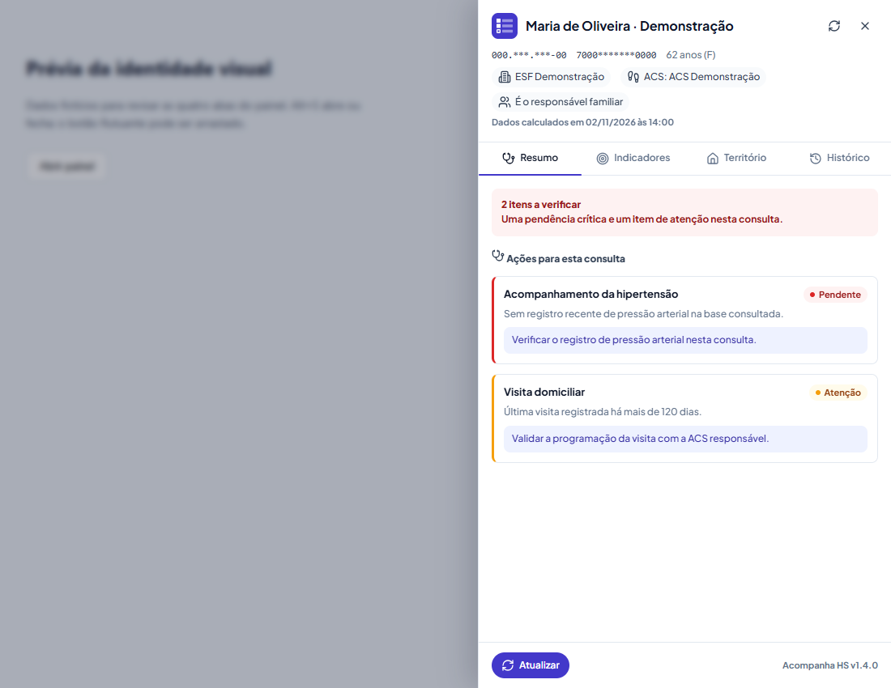
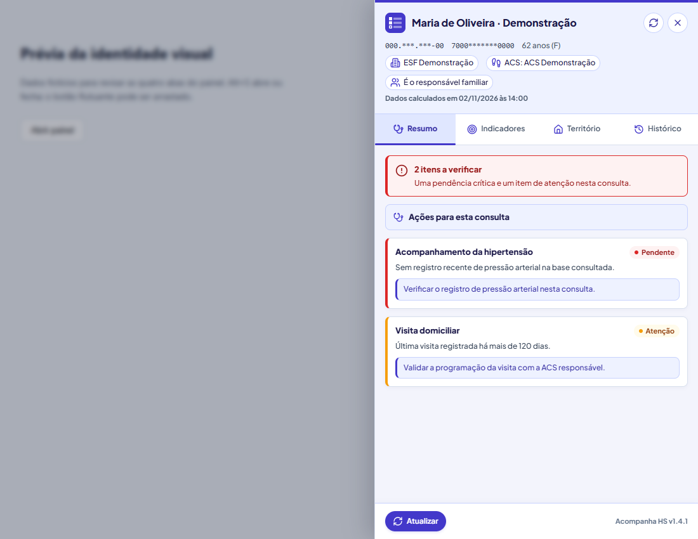

HS-APS
Gestão da atenção primária
#0F294A · JakartaO seu ponto de partida para criar sistemas, extensões e aplicativos com a mesma família visual. Marca presente, leitura forte e informação bem organizada.
Gestão da atenção primária
#0F294A · JakartaVacinação e busca ativa
#1E40AF · Outfit + InterApoio à consulta no prontuário
#4338CA · JakartaTroque o perfil, o tema e a densidade. As regras de status permanecem.
384
Pessoas acompanhadas
3
Equipes no exemplo
02/11
Última atualização
| Equipe | Pessoas | Sincronização |
|---|---|---|
| Equipe Exemplo A | 128 | Sincronizada |
| Equipe Exemplo B | 146 | Pendente |
| Equipe Exemplo C | 110 | Sem informação |
Rótulo visível, campo sólido e foco identificável.
Informe o período do relatório. Estado de erro demonstrativo.
Valores do perfil e tema selecionados. A tabela completa está nas diretrizes e no JSON.
Escala confortável; a compacta é descrita no manual.
Tecnologia a serviço do cuidado
Acompanhamento do território
1.284 · 87,4%
Informações que orientam a ação
A interface aproxima informação e ação com leitura clara e contexto.
Equipe Exemplo A · Microárea 03 · Dados fictícios
ATUALIZADO EM 02/11/2026
Acompanha HS · da primeira aplicação à revisão com mais presença visual.


Versão 1.0.0 · 02 de novembro de 2026 · Honório Serpa/PR
Responsável: Weslei Neves · TI / Departamento de Saúde
Este é o padrão de marca e interface para criar sistemas, extensões, aplicativos, SaaS e ferramentas do departamento. Ele reúne a família visual HS e a direção mais encorpada aprovada no Acompanha HS 1.4.1: presença de marca, leitura forte, divisões claras e informação clínica fácil de localizar.
Um projeto novo começa com esta base. As decisões específicas ficam no DESIGN.md do produto: nome, finalidade, perfil de marca, densidade e componentes próprios. Não é necessário redesenhar a identidade a cada projeto.
Este documento consolida referências existentes e propõe uma norma para trabalhos futuros. Não significa que todos os produtos já implementaram cada regra. As mudanças existentes e aprovadas no Acompanha são a referência de hierarquia; os perfis de outros produtos preservam suas identidades. Nenhuma aplicação foi modificada pela criação deste kit.
A marca organiza. A superfície separa. O peso orienta. O status informa.
Uma interface deve permitir reconhecer o produto, identificar onde se está e encontrar a informação principal antes de ler os detalhes. A aparência tem presença por meio de cinco recursos recorrentes:
Esses recursos são a tradução da revisão aprovada do Acompanha. A cor deve aparecer nos lugares de orientação, em vez de ficar restrita ao logo e ao botão principal. Evitar que fundo, cards, títulos e metadados tenham a mesma intensidade visual.
Uma tela operacional começa pelo trabalho do usuário. Use título, contexto, filtros e conteúdo necessário; reserve banners grandes para entrada de produto e situações que realmente precisem deles. Não acrescentar slogans, hero decorativo ou cartões repetidos sem função.
TI Saúde identifica o padrão e a autoria técnica. Família HS reúne os produtos. O produto mantém nome e símbolo próprios. O Departamento de Saúde é o endosso institucional. Este kit não cria um novo brasão ou logotipo oficial do departamento.
| Produto | Papel nas referências | Cor de identificação | Símbolo |
|---|---|---|---|
| HS-APS | Gestão da atenção primária | Navy #0F294A |
Cruz modular |
| Imuniza HS | Vacinação e busca ativa | Azul #1E40AF |
Três casas preenchidas e uma em aberto |
| Acompanha HS | Apoio à consulta no prontuário | Índigo #4338CA |
Checklist com duas casas preenchidas e uma em aberto |
Somente esses três produtos aparecem como família nos quatro materiais analisados. Não se presume uma lista completa dos sistemas do departamento.
#DC2626 + HS. O HS-APS mantém sua assinatura própria HS/APS; não renomear tudo para caber na fórmula.O símbolo do produto aparece na navegação, no favicon e no aplicativo. O logo do departamento aparece no rodapé do login, com referência de 44 px de altura e crédito: “Desenvolvido por Weslei Neves · TI / Departamento de Saúde de Honório Serpa/PR”. Em relatórios formais, o endosso institucional pode aparecer no cabeçalho junto da marca do produto, conforme a exigência do documento.
A referência de 44 px segue o material visual original. Existe também indicação posterior de 32 px no DESIGN do Imuniza. Para este padrão, 44 px é a referência de login; variações compactas precisam constar no projeto. Em SaaS externo, autoria, órgão e marca do cliente devem refletir o contexto real.
| Camada | Conteúdo | Regra |
|---|---|---|
| Fundamentos | Papéis de cor, espaçamento, legibilidade, foco, ícones, estados e movimento | Compartilhados por todos |
| Perfil do produto | Rampas de marca, símbolo, tipografia e densidade | Escolhido no início, registrado no DESIGN local |
| Componentes | Botões, campos, abas, cards, tabelas e feedback | Reutilizados por papel e comportamento |
| Domínio | Indicadores, faixas, regras clínicas, categorias e metas | Definidos pelo sistema e sua fonte de negócio |
Ordem de decisão: regra clínica e requisito de uso → este padrão comum → perfil do produto → exceção local documentada. Mudança visual não altera limiar, meta, cálculo ou significado clínico.
| Papel | Base nova / HS-APS¹ | Imuniza HS² | Acompanha HS |
|---|---|---|---|
| Identificação / navy | #0F294A |
#1E40AF |
#4338CA |
| Ação principal | #1D4ED8 |
#1E40AF |
#4338CA |
| Interação / texto forte de marca | #1E40AF |
#1E3A8A |
#3730A3 |
| Fundo tonal | #EFF6FF |
#EFF6FF |
#EEF2FF |
| Seleção | #DBEAFE |
#DBEAFE |
#E0E7FF |
| Divisão de marca | #BFDBFE |
#BFDBFE |
#C7D2FE |
| Título | #0F294A |
#172554 |
#1E1B4B |
| Canvas | #F0F4F8 |
#F0F4F8 |
#F3F4FC |
¹ Navy e azul de ação vêm do HS-APS; os demais papéis completam a rampa nesta consolidação. O perfil base usa essa direção para novos projetos sem marca definida. O uso do perfil não autoriza usar o logo HS-APS em outro produto.
² Marca e canvas preservam o Imuniza; a rampa tonal uniforme é proposta para o kit, não uma declaração de que cada página atual já a usa.
Neutros compartilhados: texto #0F172A, secundário #334155, auxiliar #475569, superfície #FFFFFF, superfície secundária #F8FAFC, borda estrutural #D8DFED, borda de campo #8492AB. Cinza claro pode separar superfícies; informação necessária usa texto escuro. Bordas suaves de card não substituem bordas identificáveis de controle.
| Estado | Sinal | Fundo claro | Texto claro | Comunicação |
|---|---|---|---|---|
| Positivo | #059669 |
#ECFDF5 |
#065F46 |
Em dia, concluído, sincronizado |
| Atenção | #F59E0B |
#FFFBEB |
#92400E |
Pendência ou atenção definida pelo domínio |
| Crítico / erro | #DC2626 |
#FEF2F2 |
#991B1B |
Situação crítica calculada ou falha de operação |
| Sem dados | #64748B |
#F1F5F9 |
#334155 |
Ausência ou insuficiência de informação |
| Informação | #0891B2 |
#ECFEFF |
#155E75 |
Orientação informativa, sem gravidade |
Verde, âmbar e vermelho aparecem por significado, com texto ou ícone correspondente. Exportar, imprimir e abrir tela são ações de marca/tonais; sucesso de uma exportação pode receber feedback verde depois da confirmação. A variante destrutiva de botão é vermelha por indicar consequência real.
O sinal âmbar não deve ser usado como texto pequeno sobre fundo claro. Use o tom escuro da coluna texto. Este kit também usa um verde escuro específico para texto branco no FAB positivo; não pressupõe que branco sobre o verde original satisfaça a meta de contraste.
Categoria não é estado. Gestante pode ter selo roxo (#6D28D9 sobre #F5F3FF), puérpera pode usar teal; o estado de cada pessoa continua num selo separado. Não interpretar a categoria como urgência. No Acompanha, índigo identifica o produto; não passa a significar gestação.
Gráficos: use azul, índigo, ciano e violeta para séries, com legenda, rótulos e distinção de traço/forma. Rampa sequencial de azul representa magnitude; verde/âmbar/vermelho representam faixas somente quando o domínio define essas faixas. Não importar os limiares de cobertura do Imuniza para outro indicador. Sem dados usa uma representação explícita e não vira zero. Oferecer tabela ou valores textuais para gráficos decisivos.
O kit oferece uma base proposta: canvas #0B1220, superfície #111C2F, superfície secundária #17243A, texto #F1F5F9, auxiliar #CBD5E1, borda #455770 e borda de campo #7285A1. Ações usam azul claro #93C5FD ou índigo claro #A5B4FC com texto escuro #0B1220. Superfícies de estado têm pares próprios, definidos em tokens.css.
A marca original permanece no asset do logo; são os papéis de interface que mudam. Tema escuro exige verificação do conteúdo real, das camadas e dos gráficos. O Imuniza já tem tema próprio: aproveitar o mapeamento existente durante migração, em vez de sobrescrevê-lo cegamente com esta base.
Padrão de projeto novo: Plus Jakarta Sans para títulos e corpo. Ela reúne a direção do HS-APS e a hierarquia aprovada no Acompanha com uma única família. Usar fonte local com licença incluída. Fallback: Segoe UI, system-ui, sans-serif.
Perfil Imuniza: Outfit em títulos e KPIs; Inter em corpo, tabela e formulário. Esta combinação é parte da identidade existente. Não a trocar durante manutenção só para uniformizar a família.
Identificadores: fonte monoespaçada apenas em código e identificadores que se beneficiem de alinhamento. O HS-APS indica JetBrains Mono; o kit técnico usa fallback local ui-monospace/Consolas, sem afirmar que inclui JetBrains. Números de KPI usam tabular-nums.
| Papel | Web / SaaS / aplicativo | Painel compacto de extensão |
|---|---|---|
| Título de abertura | 32 / 800, opcional | Não necessário |
| Título de página | 24 / 700–800 | 16 / 800 |
| KPI | 28 / 800 | Conforme necessidade, sem criar hero |
| Seção | 18 / 700–800 | 13 / 800 |
| Nome / subtítulo | 16 / 600–800 | 13–16 / 700–800 |
| Corpo | 15 / 400, entrelinha 1,6 | 13 / 400, entrelinha 1,45 |
| Texto secundário / tabela | 13 / 400–500 | 12 / 500, entrelinha 1,4 |
| Rótulo / legenda | 12 / 600–700 | 12 por padrão; 11 apenas na exceção abaixo |
Em projeto novo, 12 px é o mínimo de tela e texto necessário à decisão em campo deve ficar preferencialmente em 14–16 px. A extensão Acompanha 1.4.1 tem exceção existente de 11 px para rótulos curtos, códigos e metadados, nunca para corpo clínico. Essa exceção não deve se espalhar para os outros sistemas. Pesos permitidos: 400, 500, 600, 700 e 800. Evitar criar valores intermediários por componente.
O modo compacto economiza espaço de interface, não remove informação. Fornecer expansão, quebra de linha e acesso ao texto completo quando necessário. Não truncar nome, dose ou aviso indispensável sem alternativa acessível.
Web: topbar de referência 64 px; sidebar 248 px, opção recolhida 76 px. Tela estreita troca a sidebar por gaveta com botão de abrir e fechar, fundo de bloqueio, gestão de foco e retorno ao acionador. Abaixo de 960 px é o breakpoint inicial, ajustável ao conteúdo.
Abas: altura de referência 48 px, estado ativo com fundo, peso e indicador. Usar semântica de tabs quando alternarem painéis locais; links de navegação usam estado de página atual. Abas locais operam por teclado com setas, Home/End e estado selecionado. Evitar áreas fixas cobrindo foco ou conteúdo.
Pill, ícone Lucide opcional e verbo claro: Salvar, Aplicar filtros, Gerar relatório. Uma ação primária por tela; em um modal, uma primária própria para a tarefa modal. Tonal para exportar/imprimir; secundário para cancelar/limpar; ghost para ação discreta; danger para ação destrutiva.
Alturas: 32 compacto, 40 padrão, 48 grande. Em contexto de toque/campo, alvo mínimo adotado de 44 × 44 px, inclusive botão só com ícone. Ícone sem texto precisa de nome acessível. Em processamento, indicar atividade, manter rótulo e evitar envio duplicado. Após terminar, comunicar sucesso ou erro; não ficar preso no estado carregando.
Rótulo visível, campo branco/superfície sólida, borda identificável, ajuda quando necessária. Placeholder não substitui rótulo. Foco com outline visível; erro com texto associado ao campo, preservando o valor digitado. Checkbox/radio e select precisam de operação por teclado. Filtros ativos devem ser reconhecíveis e removíveis; pill que filtra usa estado pressionado/selecionado.
Badge informa estado; pill selecionável filtra; chip lista um item ou filtro removível. Cada um tem comportamento próprio. Badge não deve parecer botão se não for acionável. Texto de estado vem da situação real; o tema só escolhe a apresentação. Distinguir pendência clínica, falha técnica, dados desatualizados e ausência de dados.
Alertas têm título, explicação e próximo passo quando existir. Mensagem de falha de rede não pode fazer parecer que o paciente está em dia. Componentes de status são combináveis com o card e não substituem o título do conteúdo.
KPI tem valor, unidade, rótulo e contexto temporal. Só recebe estado se houver cálculo definido. Cor do ícone comum segue a marca; gestação pode usar categoria roxa sem colorir todo KPI como alerta.
Tabela alinha números, mantém cabeçalho compreensível e diferencia ação de dado. Ordenação anuncia o estado. Em celular, permitir rolagem dentro da região da tabela ou representação em lista, mantendo o contexto; a página não deve transbordar. Não esconder colunas essenciais sem forma de consultá-las.
Para cada fluxo, prever: inicial, carregando, preenchido, vazio, erro, sem dados e indisponível quando aplicável. “Nenhum resultado para estes filtros” é diferente de “Não foi possível consultar”. Indicar atualização/fonte quando a atualidade muda a interpretação. Uma animação de skeleton não deve parecer dado real.
No Acompanha, sem paciente o FAB apresenta a marca; com paciente, apresenta status e quantidade. Sem dados tem sinal neutro, nunca verde. Estado crítico pode chamar atenção por até três ciclos; nada pulsa indefinidamente. Gaveta respeita teclado, foco, área útil e movimento reduzido. CSS da extensão deve ficar isolado, por exemplo em Shadow DOM; não sobrescrever o prontuário hospedeiro.
Login prioriza marca do produto, formulário e feedback. Endosso fica no rodapé. Relatório deve funcionar em A4 e P&B, com título, período, filtros, origem, atualização e paginação quando aplicável. Texto principal preto, fundo branco; faixas continuam compreensíveis por rótulo/forma. Não repetir automaticamente um cabeçalho de tela em PDF.
Lucide, grade de 24, traço 2, currentColor, tamanhos 16/20/24. Usar SVG local ou biblioteca já instalada; não carregar ícone remoto em tempo de uso. Evitar emojis em navegação, botões, selos e alertas. Símbolos de produto são assets de marca, separados dos ícones operacionais.
Movimento: 150 ms para feedback; 300 ms para abertura/troca de contexto; entrada curta e discreta. Carregamento pode repetir enquanto a operação estiver em curso. Respeitar prefers-reduced-motion, cancelar animações decorativas e evitar que status crítico dependa da animação.
Metas internas de revisão: contraste de texto pelo menos 4,5:1; informação gráfica e limites funcionais pelo menos 3:1; foco visível e operação por teclado. Medir os pares efetivamente renderizados em ambos os temas. Não considerar aprovação de uma amostra como certificação de acessibilidade do produto inteiro.
Revisar em 360 px, em tamanho de desktop e com ampliação a 200%; menus/modais devem gerenciar foco e devolver o foco ao fechar. Cor nunca é a única forma de distinguir estado. Mensagens assíncronas usam anúncio acessível apropriado sem interromper toda a leitura. A documentação e demonstrações usam dados fictícios; não incorporar pacientes reais em capturas de design.
Português claro e direto: “Salvar configurações”, “Não foi possível atualizar”, “Tentar novamente”. Especificar a ação que a pessoa pode executar. Manter termos clínicos corretos e nomes oficiais de indicadores. Não substituir a terminologia da API ou uma regra clínica por uma interpretação estética.
Datas de tela: dd/mm/aaaa; horário de atualização visível onde necessário; número decimal com vírgula e unidade explícita. Períodos de relatório precisam estar definidos. Não colocar detalhes de framework, banco, token ou implementação em fluxos comuns; diagnóstico técnico fica na área apropriada.
Arquivos incluídos:
LEIA-ME.md: entrada e roteiro rápido.manual-visual.html: manual completo com amostras interativas de perfis, temas e densidade; funciona localmente sem rede.exemplo-interface.html e EXEMPLOS.md: tela demonstrativa e índice das pranchas PNG de cores, tipografia e interfaces.tokens.css: variáveis com prefixo --hs-, perfis e tema escuro proposto.tokens.json: mesmos valores de cor, tipografia, espaço e forma para outros ambientes. JSON de aplicação próprio, sem alegação de formato universal de tokens.components.css: base de referência em classes hs-*; não é biblioteca completa de comportamento.fonts.css e assets/: fontes locais/licenças, símbolos existentes de Acompanha e Imuniza e capturas de referência do Acompanha aprovado.NOVO-PROJETO.md: ficha para preencher e salvar como DESIGN do próximo produto.PROMPT-PARA-IA.md: instrução pronta para reutilizar com assistentes.FONTES-E-DECISOES.md: origem, diferenças resolvidas e limites.fontes.json: inventário com hashes dos materiais consultados.validacao.json: verificações executadas neste kit.VALIDACAO.md: resumo legível das verificações e do seu escopo.design-system/ do novo projeto e escolher perfil: base, hs-aps, imuniza ou acompanha. Projeto novo sem identidade usa base, Jakarta e densidade confortável.NOVO-PROJETO.md com objetivo, público, identidade e exceções. Usar o prompt com a IA e fornecer acesso à pasta, não apenas o nome deste padrão.fonts.css, tokens.css e components.css, nessa ordem. Selecionar perfil com data-hs-product no elemento raiz; data-hs-density="compact" é opcional. Sem atributo, o padrão base já funciona.data-hs-theme="dark" somente após revisar o tema. O kit começa claro e não muda automaticamente pelo sistema operacional.<html lang="pt-BR" data-hs-product="acompanha" data-hs-density="compact">
<head>
<link rel="stylesheet" href="design-system/fonts.css">
<link rel="stylesheet" href="design-system/tokens.css">
<link rel="stylesheet" href="design-system/components.css">
</head>
<body class="hs-app">...</body>
</html>
Para migração, mapear tokens antigos para os papéis novos e revisar por tela, preservando comportamento. Não copiar uma folha global sobre aplicação existente sem verificar conflitos. Na extensão, aplicar tokens e classes dentro da raiz isolada; o seletor [data-hs-root] oferece base para esse contexto.
Versão 1.0.0 é a consolidação inicial. Correção de exemplo ou documentação muda patch; componente/papel compatível muda minor; mudança incompatível de nome, token ou estrutura muda major. Produtos registram a versão adotada e migram de forma deliberada, sem sincronização automática.
Uma exceção deve registrar: necessidade, escopo, valor/comportamento, evidência de uso e forma de revisão. O objetivo é reutilizar as decisões já tomadas e manter espaço para a necessidade real de cada ferramenta.